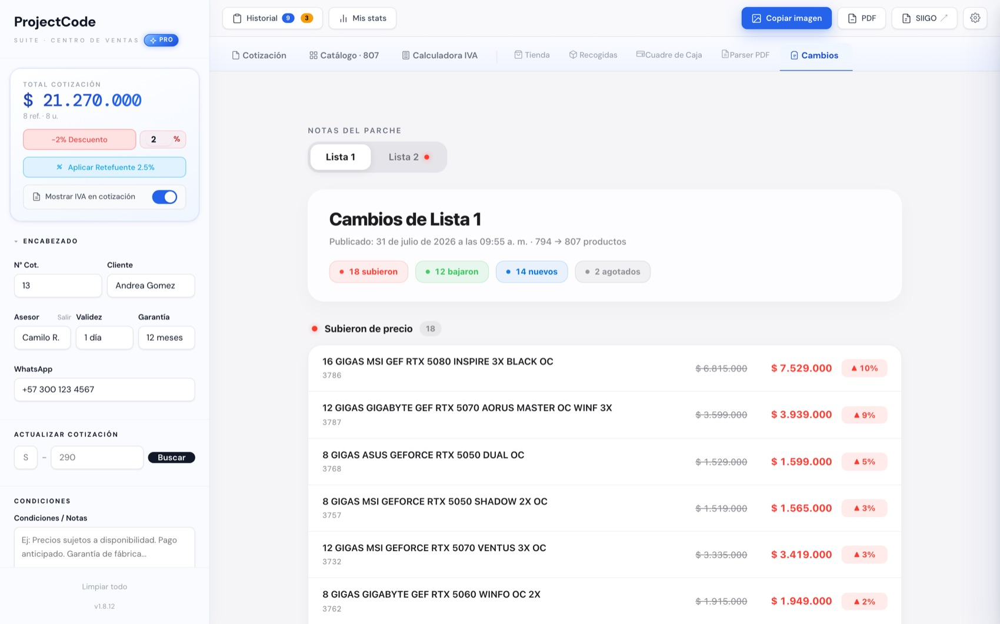
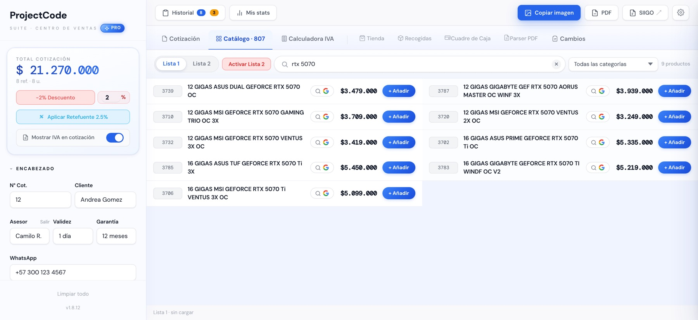
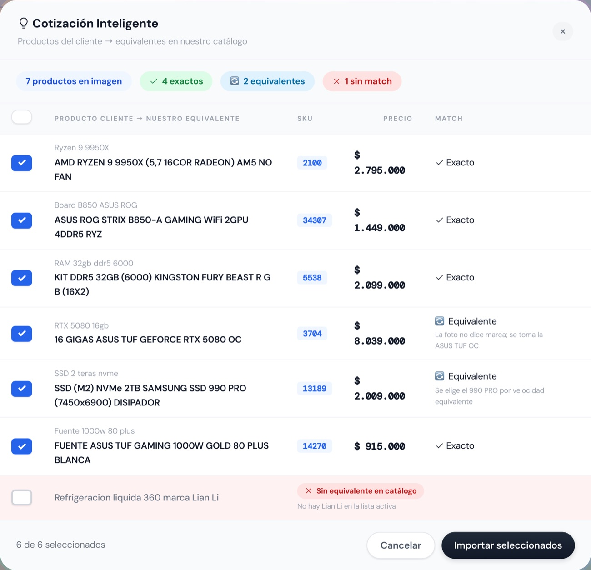
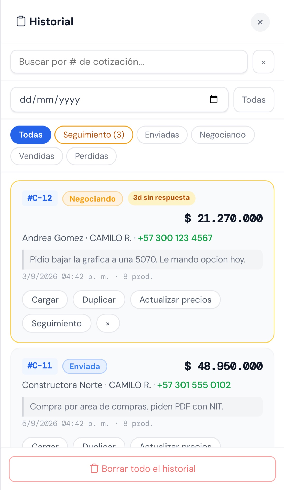
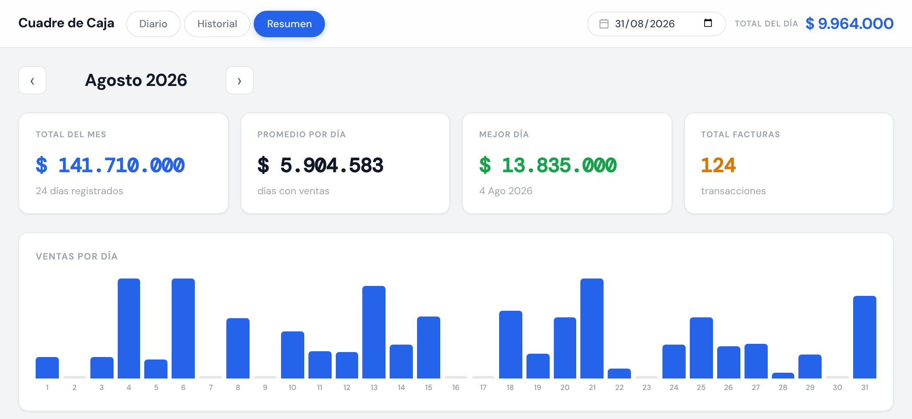
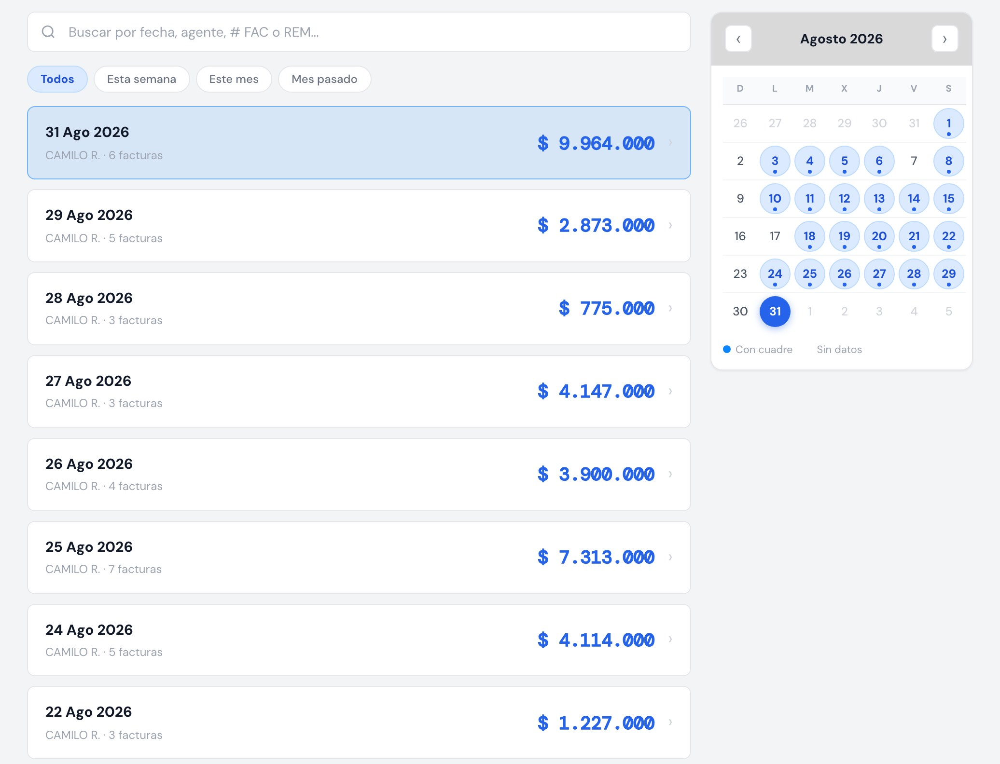
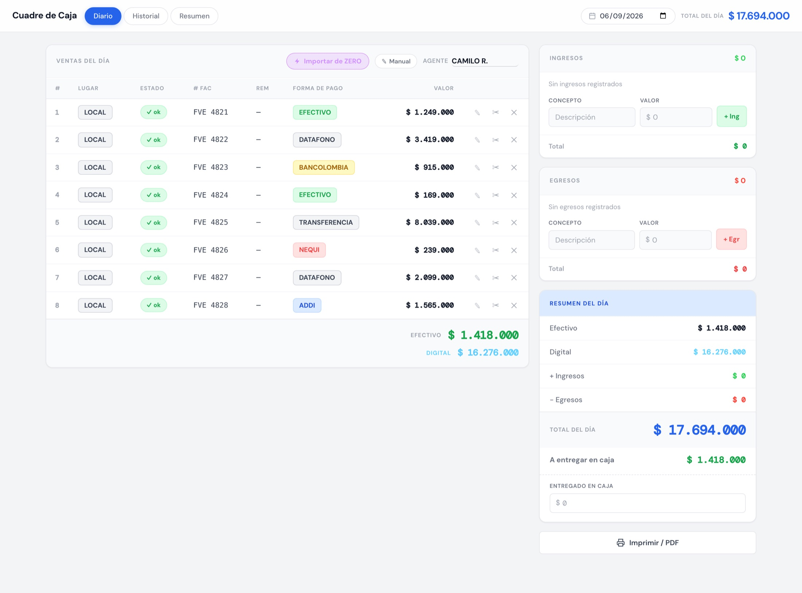
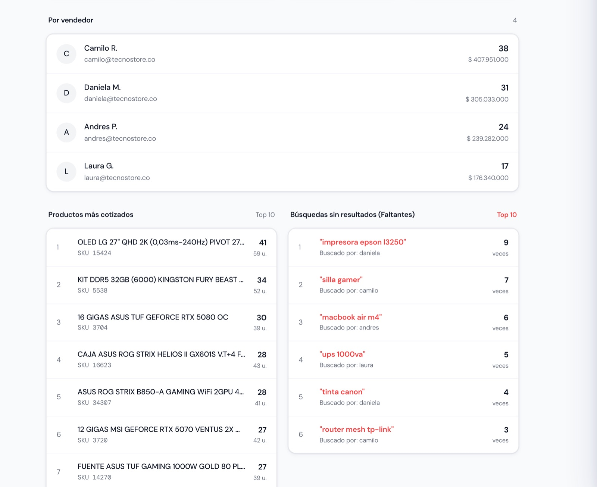
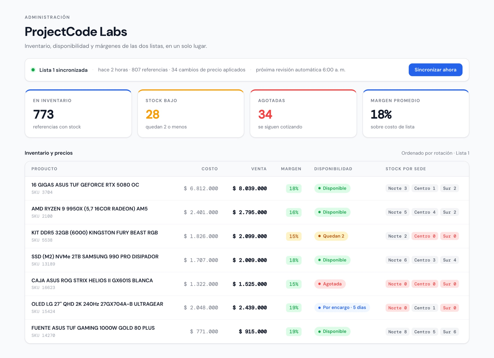
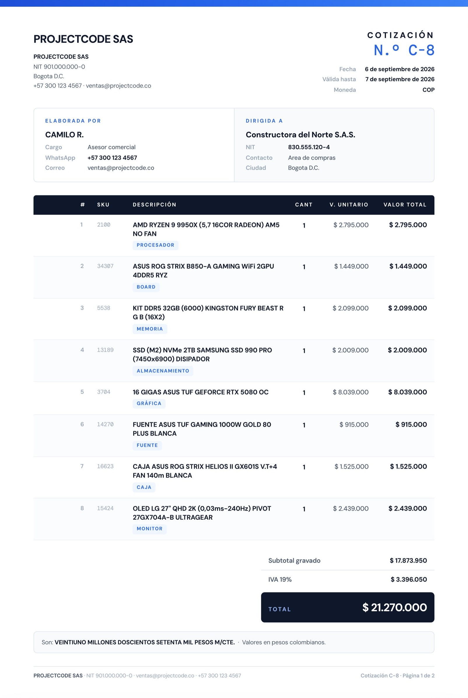

ProjectCode
Su proveedor mueve los precios cada semana. Se mueve la lista entera y nadie alcanza a revisarla a tiempo. ProjectCode las convierte en catálogo, le dice exactamente qué cambió y deja a su equipo cotizando en segundos.
Por qué existe
La lista llega con el formato que al proveedor se le ocurrió esta vez, y mientras no esté en la pantalla del mostrador se sigue cotizando con la de antes. Cuando el precio subió, la tienda pierde el margen; cuando bajó, pierde una venta que pudo cerrar.
Un cierre de lista real, tal como lo publica la aplicación.
En este negocio casi todo se mueve en PDF, y va a seguir así mientras el proveedor lo mande así. ProjectCode no le pide cambiar eso. Recibe la lista igual que siempre y le pone encima lo que un archivo nunca va a poder darle.
El producto
Cinco cosas que hoy viven repartidas en archivos, chats y memoria. Todo lo que sigue son pantallas reales del sistema.
El sistema lee el archivo que le llegó —PDF, Excel o lo que sea—, arma el catálogo y lo compara contra el anterior. En vez de un archivo nuevo del que nadie se entera, el equipo recibe qué subió, qué bajó, qué entró y qué se agotó, con el precio viejo al lado del nuevo.

Búsqueda por nombre o SKU, filtro por categoría y más de una lista de precios activa al tiempo. El vendedor añade con un clic y el total se recalcula mientras habla con el cliente.

El asesor pega el mensaje tal como lo mandó el cliente. El asistente recorre el catálogo de la tienda, arma el equipo completo —procesador, board, memoria, disco, tarjeta de video, fuente, caja y disipador—, revisa que las piezas sean compatibles entre sí y lo ajusta al presupuesto.
El cliente manda la captura de una lista de la competencia o el papelito de lo que quiere. El asistente lo traduce a productos del catálogo propio: cuáles son exactos, cuáles son equivalentes y por qué, y cuáles no existen en la lista activa.

Cada cotización guarda estado, teléfono y notas. Las que llevan días sin respuesta se marcan solas, y el vendedor abre el día sabiendo a quién llamar en vez de revisar el historial de WhatsApp.

Comunicación entre sedes
Es la venta que más se cae y la que peor se maneja: una llamada, un mensaje suelto, un papel en el mostrador. Cuando el cliente llega a la otra sede, nadie sabía que venía. Aquí se registra en el momento y la sede que recibe se entera al instante, sin que nadie tenga que llamar.
Banner, sonido y un contador en la pestaña. Si el asesor tiene los avisos del navegador activados, le llega aunque esté en otra ventana. Nadie tiene que levantar el teléfono para avisar que va un cliente en camino.
Quién la registró, quién la alistó, quién la entregó y a qué hora. Cuando algo no aparece, la conversación deja de ser quién tuvo la culpa y pasa a ser dónde se quedó.
Cierre de caja
Cada venta queda registrada con su número de factura y su forma de pago, y cada cierre con el nombre de quien lo hizo, sin pasar nada a un Excel. El día termina con lo que debe haber en la caja; el mes, con el total, el promedio y el detalle de cada jornada. Y si algún día algo no cuadra, se busca por fecha, asesor o número de factura, y ahí está.




Hoy un asesor nuevo se demora semanas aprendiéndose el catálogo y a quién preguntarle por un precio. Con el catálogo buscable y los precios al día, cotiza bien desde el primer turno.
Cuando el que sabe sale a vacaciones, hoy se lleva las cotizaciones y los seguimientos en su WhatsApp. Acá se quedan en la tienda: quien lo reemplace abre el historial y sigue donde el otro dejó.
Nada de esto aparece en el estado de resultados. Aparece en cuántas cotizaciones alcanza a sacar la misma persona en el mismo día, y en cuántos puntos puede abrir antes de tener que crecer el equipo.
ProjectCode Labs
Esa lista la digita o la interpreta alguien, y alguien se equivoca. Labs es la consola del administrador: cuántas unidades quedan de cada referencia, en qué sede están, cuánto margen deja cada venta — y qué hay que revisar antes de que un precio malo salga al mostrador.
En desarrollo · primera versión con los clientes que entren este año
El documento
El mismo carrito sale en dos formatos. Para WhatsApp, un documento corto. Para una licitación o una orden de compra, una hoja A4 con emisor y destinatario con NIT, líneas numeradas, IVA desglosado, total en letras y numeración de páginas.

Trayectoria
ProjectCode nació dentro de una tienda de tecnología en Bogotá con tres puntos de venta, y ahí estuvo seis meses con varios asesores cotizando sobre él todos los días. Cada función existe porque alguien la necesitó en una venta, no porque se veía bien en una demo.
Cómo arranca
PDF, Excel o el portal del proveedor. Se conecta una vez, al principio, y de ahí en adelante la lista entra sola.
Las cotizaciones salen a nombre de su tienda. ProjectCode no aparece por ningún lado.
Usted decide quién ve el catálogo completo, quién factura y quién administra.
Y si su negocio funciona distinto —otro consecutivo, otras formas de pago, otro software de facturación— el sistema se cambia. Quien lo escribió es quien hace el cambio, y el alcance se acuerda con usted antes de empezar.
La forma más rápida de saber si le sirve es verlo con su propio catálogo. Media hora, sin instalar nada, y sale sabiendo exactamente qué haría el sistema con los precios que maneja hoy.
Transparencia
El catálogo, las cotizaciones y los clientes que su tienda carga en ProjectCode son de su empresa. Esto es exactamente qué se guarda, dónde vive y quién puede verlo. El detalle completo está en el documento de tratamiento de datos, abajo.
Cada cotización con el nombre del cliente, su teléfono, las notas de seguimiento y los productos. En modo Empresas, además la razón social y el NIT del comprador. Su catálogo de precios. Y una cuenta por asesor con su correo, su sede y su consecutivo.
En Google Firebase, sobre infraestructura de Google Cloud. Cada asesor ve sus propias cotizaciones; el administrador de su tienda ve las de todo el equipo. El navegador guarda además una copia local de las últimas ochenta, para poder cotizar sin conexión.
ProjectCode le concede a su empresa una licencia de uso del sistema por el término acordado. No es una venta: el código fuente, la arquitectura y la documentación siguen siendo propiedad de ProjectCode. La licencia es para su empresa, no es transferible ni sublicenciable a terceros.
De ProjectCode: el software y todo lo que lo compone. De su empresa: su marca, su logo, su lista de precios, sus cotizaciones y los datos de sus clientes. Al terminar la relación, su empresa puede llevarse esa información en formato legible.
El sistema se apoya en servicios de terceros —Google Firebase para la base de datos y la autenticación, y proveedores de inteligencia artificial para el asistente—. Una caída de esos servicios afecta al sistema y está fuera del control de ProjectCode. Las funciones de catálogo y cotización siguen operando localmente cuando no hay conexión.
Lo que devuelven el escaneo de imágenes y el armado de equipos son sugerencias generadas automáticamente y pueden contener errores. La revisión final, antes de que la cotización salga al cliente, es del asesor. ProjectCode no responde por el contenido de lo que se envía.
El catálogo lo publica su empresa a partir de la lista de su proveedor. ProjectCode no verifica ni garantiza esos precios, y no responde por errores que vengan de la lista de origen ni por diferencias con el precio final de venta.
La responsabilidad de ProjectCode se limita al valor pagado por la licencia en los doce meses anteriores al hecho. No cubre lucro cesante, pérdida de oportunidades comerciales ni daños indirectos.
Este acuerdo se rige por las leyes de la República de Colombia. Las diferencias se resuelven ante los jueces de Bogotá D.C.
Frente a la Ley 1581 de 2012 y al Decreto 1074 de 2015, su empresa es el Responsable del Tratamiento de los datos de sus clientes y de sus asesores. ProjectCode actúa como Encargado: trata esos datos únicamente para prestarle el servicio, siguiendo sus instrucciones, y no los usa para fines propios ni los cede a terceros distintos de los que aparecen abajo.
De sus clientes: nombre, teléfono, notas de seguimiento comercial y, cuando se cotiza a una empresa, razón social, NIT, contacto, correo y ciudad. De sus asesores: correo de la cuenta de Google con la que entran, nombre visible, sede asignada y registro de ingresos al sistema con fecha y navegador.
Para generar y guardar cotizaciones, hacerles seguimiento comercial, cuadrar la caja del día, medir la actividad del equipo de ventas y controlar quién tiene acceso al sistema.
Google (Firebase Authentication y Cloud Firestore) aloja la información. Los proveedores de inteligencia artificial —Google Gemini, DeepSeek y Groq— reciben únicamente el contenido que el asesor envía a esas funciones: la imagen que sube y el catálogo de productos. No reciben la base de clientes.
Toda persona cuyos datos estén en el sistema puede conocerlos, actualizarlos, rectificarlos, solicitar prueba de la autorización, ser informada del uso que se les da, presentar quejas ante la Superintendencia de Industria y Comercio, y revocar la autorización o pedir la supresión cuando proceda. Las solicitudes se atienden por el WhatsApp de contacto de esta página.
El ingreso es con cuenta de Google sobre una lista de correos autorizados por el administrador de su tienda. Cada cuenta admite una sola sesión activa a la vez. Las reglas de acceso a la base de datos limitan a cada asesor a sus propias cotizaciones.
Obtener de sus clientes la autorización para tratar sus datos, publicar su propio aviso de privacidad y —si le aplica por tamaño— registrar sus bases de datos ante la Superintendencia de Industria y Comercio. Son gestiones que hace su empresa directamente, porque es la titular de la relación con esos clientes; ProjectCode no puede hacerlas en su nombre.